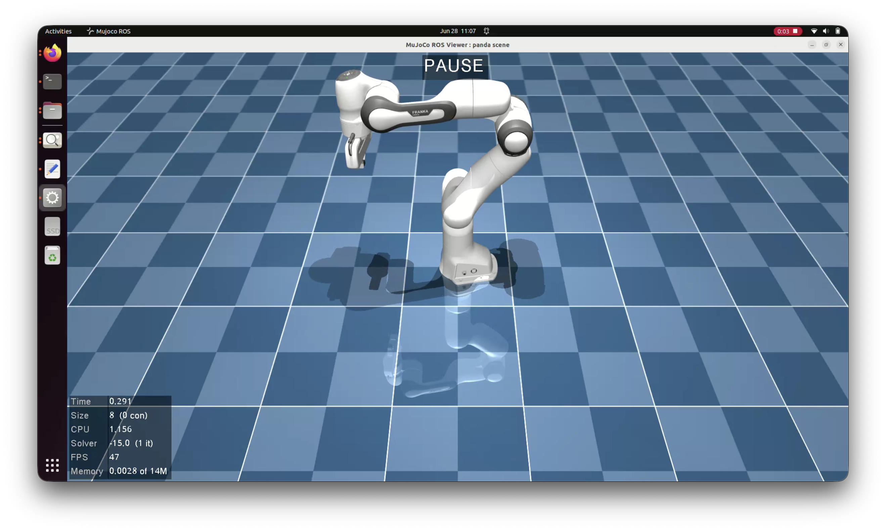
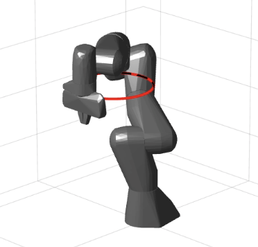

- Date
- Jun 2026
- Category
- Robotics & Control Systems
- Stack
- MATLAB · ROS 2 · C++ · KDL · MuJoCo · CLIK
Redundancy Resolution: Kinematic Control for Franka Emika Panda


Problem Statement
Redundant manipulators like the 7-DOF Franka Emika Panda possess more degrees of freedom than required for standard 6-D Cartesian tasks. The core engineering challenge was to track a precise circular Cartesian trajectory while simultaneously exploiting the arm's internal kinematic redundancy to prevent joints from reaching mechanical limits and avoid kinematic singularities.
Proposed Solution
I developed a Closed-Loop Inverse Kinematics (CLIK) control scheme using Jacobian pseudoinverse formulations to execute the primary tracking task. To utilize the extra degree of freedom, I implemented a null-space projection law (I − J+J) that projects secondary optimization goals—specifically joint-centering gradient descent and Yoshikawa manipulability index maximization—without affecting end-effector motion. The pipeline was validated in MATLAB and ported to a real-time C++ ROS 2 controller plugin for MuJoCo simulation.
Key Results
- Validated null-space projection theory, maintaining sub-millimeter trajectory accuracy (error < 0.7 mm) regardless of secondary objective activation.
- Demonstrated effective joint-limit avoidance, reducing the average joint displacement index from 0.0627 to 0.0429 (~31% posture optimization).
- Engineered a complete C++ ROS 2 control plugin incorporating KDL forward kinematics and real-time Jacobian decomposition.